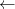
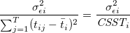
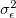
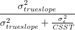

| 縦断データの分析 |
| 縦断データの分析 |
各行が各ヒトに相当（ヒト  測定回ごとの値、属性変数など）
測定回ごとの値、属性変数など）
経験的成長記録が目で見て簡単に確認できるが、
時点間の相関行列を算出しても、それは各時点間での順位の安定性を表しているに過ぎない
時間に関する情報が変数名に含まれているので、分析に使えない
測定時点の回数あるいは間隔が個人間で異なると役に立たない
予測変数が時間とともに変化するようなものであった場合、手に負えない1
各行が各測定時点のデータに相当  こちらの形式にすること
以下の４つのタイプの変数が含まれる。
個人を識別する変数
時間を識別する変数
結果変数
予測変数
個別に結果変数と時点をプロットする。 ランダムに何人かを選択するか、重要な変数で層化して抽出するとよい。
スプライン平滑化
Loess 平滑化
カーネル平滑化
移動平均
個人ごとのデータに最小２乗法による回帰モデルを当てはめる。（関数形を決める）
各測定時点での平均を用いて平滑化曲線を描く2
各個人の平滑化曲線を重ねて描く
OLS 推定による変化率の精度は、
残差分散（予測値と観測値とのズレ）
観測回数とその間隔
に依存する。 つまり、個人  の OLS 推定における変化率の標本分散は、
の OLS 推定における変化率の標本分散は、
|  | (2.1) |
である。 測定時点がより多様化すれば、変化の測定精度はより高くなる。
測定時点を平均より離れたところまで拡大する
測定時点を増やす
精度は個人レベルで、信頼性はグループレベルで意味がある。
仮に完全に釣り合い型データであって、個人の残差は独立に共通の分散  の分布から得られたものであるとすると、OLS 推定による変化率の信頼性は、
|  | (2.2) |
と定義される。 この量は、
変化率の精度（の逆数）
真の変化率の分散
の双方に左右される。 つまり、個人の変化率の推定精度と変化の異質性とが交絡している。
メモ
変化率の信頼性を算出することが（グループレベルでも）どのような意義を生むのか、よくわからない。
テストであれば、個人差を識別すること自体が目的であるので、そもそも真の得点に個人差が含まれないことには意味がない。 つまり、個人差がないことで信頼性が低くなること自体には、テスト得点の個人差は誤差由来でしかないといえる。
一方、変化の個人差については、それがあることが大前提なのではなく、あるとすればどれくらいあるのか現状を把握することが目的である。 結果的に変化率に個人差がほとんどなければ、それはそれで現実を反映した知見であるのだから、そのことによって信頼性が低くても問題とは言えないと思う。
メモ
Footnotes
| 縦断データの分析 |